Ⅲ. The Maslov Index and Chern-Weil Theory.
In the previous series of talks we have proved the first part of Riemann-Roch theorem 1.12, and in this series we aim to introduce the concept of boundary Maslov index, which serves as the Fredholm index stated in this theorem. Then we will try to give a proof of the second part of Riemann-Roch theorem using properties of Maslov index and Morse theory.
The Boundary Maslov Index
We start with an exposition of the classical Maslov index. It is originally studied by Maslov and then developed by Arnold in his paper [15] where they used it to give another conditions for quantizations. In their setting, let $(V,\omega )$ be a symplectic vector space of dimension $2n$ where $\omega$ is some symplectic form, and we are considering the space $\mathcal{L} (V)$ of all Lagrangian subspace of $V$. This space is called the Lagrangian Grassmannian of $V$. On the complex side, given a complex vector space $(W, J)$ where $J$ is the complex structure, we have the space $\mathcal{R} (W)$ of all totally real subspaces of $W$. With a group-theoretic point of view, we know that they are all homogeneous spaces: $\mathcal{L} (V)=\mathrm{Sp} (V)/\mathrm{GL} (n,\mathbb{R})$, and $\mathcal{R} (W)=\mathrm{GL} (W,\mathbb{C})/\mathrm{GL} (n,\mathbb{R})$. The Maslov index gives a map $$ \Pi_1 (\mathcal{L} (V))\rightarrow\frac{\mathbb{Z}}{2}, $$ that is, associated to any path $\gamma$ in $\mathcal{L} (V)$ a half-integer $\mu (\gamma) $. When we are considering loops in this Lagrangian Grassmannian, we would get an integer, which by Arnold comes from the pairing of the homology class $\gamma\in H_1 (\mathcal{L} (V),\mathbb{Z})$ with some cohomology class $\mu\in H^1 (\mathcal{L} (V),\mathbb{Z})$. This class $\mu$ is called the Maslov class and the pairing $\mu (\gamma)$ is called the Maslov index of $\gamma$. Recall that a symplectic space $V$ admits naturally a compactible complex structure $J$ so that the space becomes a complex vector space, hence we can talk about both $\mathcal{R} (n)$ and $\mathcal{L} (n)$ on $V$. $\mathcal{L} (V)$ is a deformation retract of $\mathcal{R} (V)$. There exists a map $\det^2\colon\mathcal{L} (V)\to\mathbb{S}^1$ such that its induced map $\det_{\ast}^2$ on $H_1 $ is an isomorphism and this coincides with the Maslov index $\mu$.You could find it in [14].
With this map $\det^2$, we could then consider the similar invariant on the space $\mathcal{R} (V)$. The map $\det^2$ here is a group homomorphism $\det^2\colon\mathcal{R} (V)\to\mathbb{C}^{\ast}$, hence inducing a map on first homology group $\det_{\ast}^2\colon H_1 (\mathcal{R} (V))\to\mathbb{Z}$. They will give the same invariant by this lemma, and in this case we just drop the symplectic form and consider the space $\mathcal{R} (V)$. So we have the following Corollary:
Any two loops in $\mathcal{R} (n)$ and $\mathcal{L} (n)$ are homotopic if and only if they have the same Maslov index.Now we are going to construct boundary Maslov index of the bundle pair $(E,F)$ over the compact Riemann surface $\Sigma$ with boundary $\partial\Sigma$. Since $\Sigma$ is two-dimensional, its boundary is a one-dimensional closed manifold and is hence a disjoint union of circles. Therefore a totally real subbundle $F\subseteq E\vert_{\partial\Sigma}$ on the boundary is a map $\Lambda\colon\partial\Sigma\to\mathcal{R} (n)$,and we could talk about the Maslov index $\mu (\Lambda)$. It turns out that this index nearly completely characterized bundle pairs.
Two bundle pairs $(E_1 ,F_1)$ and $(E_2 ,F_2)$ are isomorphic if there exists a complex-linear bundle isomorphism $\Phi\colon E_1\to E_2$ such that $\Phi (F_1)=F_2$.In this sense of isomorphism, we have the following characterization:
There is a unique map $\mu$ from the space of all bundle pairs over a compact Riemann surface $\Sigma$ to $\mathbb{Z}$ such that the following axioms are satisfied:- (Isomorphism)Let $\Phi\colon E_1\to E_2$ be an isomorphism of complex vector bundles covering an orientation-preserving diffeomorphism $\phi\colon\Sigma_1\to\Sigma_2$ of compact Riemann surfaces with boundary, and let $F_1\subseteq E_1\vert_{\partial\Sigma_1}$ be a totally real subbundle, then we have $\mu (E_1 ,F_1)=\mu (E_2 ,\Phi (F_1))$.
- (Direct Sum)Let $(E_1 ,F_1)$ and $(E_2 ,F_2)$ be two bundle pairs over the same compcat Riemann surface $\Sigma$, then we have $\mu (E_1 ,F_1 )+\mu (E_2,F_2)=\mu (E_1\oplus E_2 ,F_1\oplus F_2)$.
- (Composition)Let $\Sigma_{02} =\Sigma_{01}\cup\Sigma_{12}$ be a composition of cobordisms(we will introduce this concept in the sequel), and let $(E_{ij} ,F_{ij})$ be the corresponding bundle pairs, then $\mu (E_{01} ,F_{01} )+\mu (E_{12} ,F_{12} )=\mu (E_{02} ,F_{02} )$.
- (Normalization)If $\Sigma =\mathbb{D}$ is the closed unit disk with boundary $\mathbb{S}^1$, and $E=\mathbb{D}\times\mathbb{C}$ the trivial line bundle with totally real subbundle given by $F_z=\mathbb{R} e^{ik\theta /2}$ for $z=e^{i\theta}\in\mathbb{S}^1$, then\[ \mu (D\times\mathbb{C} ,F)=k.\]
And the boundary Maslov index has the following important property that would be used in our proof:
The boundary Maslov index satisfies the following:- (Trivial Bundle)If $\partial\Sigma\neq\emptyset$ and $E=\Sigma\times\mathbb{C}^n$, then \[ \mu (\Sigma\times\mathbb{C}^n,F)=\mu(\Lambda) \] where $\Lambda$ is defined by $\Lambda (z)=F_z$ for $z\in\partial\Sigma$.
- (Chern Class)If $\partial\Sigma =\emptyset$, then $\mu (E,\emptyset )$ is twice the value of the first Chern class $c_1 (E)\in H^2 (\Sigma)$ on the fundamental class $[\Sigma]\in H_2 (\Sigma)$: \[ \mu (E,\emptyset )=2\langle c_1 (E),[\Sigma ]\rangle. \]
We want to prove these theorems. First of all, note that compact Riemann surface $\Sigma$ with boundary $\partial\Sigma$ has the homotopy type of a bunch of circles, so we could guess any bundle pair $(E,F)$ over $\Sigma$ would have nice classification results. In fact, for real vector bundles over a circle, it is well-known that there are only two types of them, classified only by orientation, hence for $F$, there exists $(n-1)$ everywhere linearly independent sections $s_1 ,\dotsb ,s_{n-1}$ and a line bundle $L\to\partial\Sigma$ such that \[ F=L\oplus\bigoplus_{i=1}^{n-1}\mathbb{R} s_i. \] We call this a partial framing of $F$.
Let $(E,F)$ be a bundle pair over $\Sigma$ equipped with a partial framing $(L;s_1 ,\dotsb, s_{n-1})$ on $F$, then there exists a global trivialization $\Phi\colon E\to\Sigma\times\mathbb{C}^n$ such that $\Phi (s_i) =e_i$ and $\Phi (L)=\sqrt{\lambda (z)}\mathbb{R}$ where $\lambda\colon\partial\Sigma\to\mathbb{S}^1$ is a smooth function and $\{e_i\}$ is the set of coordinate functions on $\mathbb{C}^n$.See my thesis [14].
Let $(E,F)$ be a rank one bundle pair on $\mathbb{D}$, then there exists a trivialization $\Phi\colon E\to\mathbb{D}\times\mathbb{C} $ such that $\Phi (F_z)=\mathbb{R} e^{ik\theta /2}$ where $z=e^{i\theta}\in\mathbb{S}^1$.To proceed the proof, we need a technique called "pair-of-pants induction". This is a result of classifying compact Riemann surfaces with boundary in the topological sense, via Morse theory.
Pair-of-Pants Induction
Let $\Sigma$ be a compact surface with boundary. Here we do not impose the complex structure(or hermitian structure) on $\Sigma$, and we aim to apply Morse theory to compact surfaces in order to give the pair-of-pants induction. Let $M$ be a differentiable manifold. A Morse function $f\colon M\to\mathbb{R} $ is a smooth function on $M$ such that for each point $x\in M$ such that $\diff f_x=0$, we have $\diff^2_x f$ is a non-degenerate bilinear form.(Note that this form is always symmetric, and the proof can be seen in Lang's famous textbook [16].)Morse function was firstly introduced by Morse in 1939 when he was trying to compute the dimension of the subspace of the tangent space of the space of all loops connecting two points such that the Hessian at this point of the energy functional is negative definite. Then we found that the critical points of any Morse function has topological meanings: critical points together with its Morse index gives cellular decompositions of $M$, and Witten in 1982 found furthermore that Morse function gives homology theories on $M$: we can set $CM_{\ast} (M,f;\mathbb{Z}_2)$ to be the vector space generated by critical points of $f$, and let $\partial\colon CM_{k+1} (M,f;\mathbb{Z}_2)\to CM_k (M,f;\mathbb{Z}_2)$ be the map counting trajectories starting from the given critical points and end at some critical points of index one less. Then it can be shown that this actually gives the boundary map satisfying $\partial^2=0$. Then we would obtain the corresponding homology group $HM_{\ast} (M,f;\mathbb{Z}_2 )$, which is called the Morse homology. It turns out that this homology group is independent of the choice of Morse functions, and this group is isomorphic to the singular homology group $H_{\ast} (M;\mathbb{Z}_2)$. We can even impose orientations to the counting of trajectories so that we can talk about coefficients in $\mathbb{Z}$.
We call the integer $i$ the Morse index of $f$ and written $\Ind_p (f)$. This lemma tells us that the non-degenerate critical points of any smooth functions are isolated, hence when $M$ is compact, there are only finitely many of them. The reason why the critical points play an important role is the following:
Let $f$ be a smooth function on $M$ and $a\in\mathbb{R}$ is in the image of $f$. Then if $a$ is a regular value, we have a diffeomorphism $f^{-1} (-\infty, a-\varepsilon ]\cong f^{-1} (-\infty ,a+\varepsilon ]$; if $a$ is a critical value, $f^{-1} (-\infty ,a+\varepsilon ]$ is diffeotopic to $f^{-1} (-\infty ,a-\varepsilon ]$ attaching a cell of dimension $\Ind_p (f)$ where $p$ is the critical point of $f$ such that $f(p)=a$.This characterization of sublevel set is essential in our discussion. Now we introduce an application of the Morse theory, given also in Milnor's famous book [18]. We start with a topological definition.
Let $M,N$ be two closed manifold of dimension $n$. A cobordism from $M$ to $N$ is a compact manifold $C\colon M\Rightarrow N$ with boundary $\partial C=M\coprod\bar{N}$, where $\bar{N}$ is $N$ with the orientation reversed. Cobordism can be studied via Morse theory. In this context, for a differentiable manifold $W$ with boudnary, we require a Morse function $f$ on $W$ to satisfy a further property that the value of $f$ on a connected component of $\partial W$ is the same, and there are no critical points on the boundary, so our basic results stated above still holds in this context. Then we could let $a$ go from $-\infty $ to $\infty$. When $a$ passes some critical value, by the previous discussion we know that the corresponding sublevel set is given by attaching some cells of dimension equal to the Morse index of each critical point, so two cobordant manifold do not necessarily have the same homotopy type. When they are diffeotopic, there is a trivial cobordism bewteen them, given directly as the product manifold $W=M\times I$, where $I$ is the unit interval.
An elementary cobordism is a cobordism $W\colon M\Rightarrow N$ such that there exists a Morse function $f$ on $W$ with only one critical points. In this picture, the saddle point is our critical point, and the green lines are the union of stable and unstable manifolds for this critical point. We write $K_p$ for this union for a given critical point $p$. We are going to state that we could rearrange these critical points by modifying Morse functions such that $K_p\cap K_q=\emptyset $ for each pair of critical points $p,q$.
See [18].
This theorem tells us that once we know $K_p$ and $K_{p'}$ are distinct, then we could rearrange the critical points arbitrarily as we wish. This can be generalized easily to several critical points, but in this case we require these set of critical points lie completely in two level sets, and we can only rearrange the two sets of critical points lying completely in exactly one level set. When will this condition be satisfied? The subsequent conclusion in Milnor's lecture is the following.
Let $f$ be a Morse function defined on the cobordism $W$ such that $f$ has exactly two critical points $p,p'$ such that $\Ind (p)\geq\Ind (p')$ and that $f(p)\le f(p')$, then it is possible to alter the gradient-like vector field $\xi$ such that $p$ and $p'$ are still critical points with $S_R\cap S_L'=\emptyset$. The general result concerning two sets of critical points with only two Morse index $\lambda$ and $\lambda'$ is also true.With these two results and induction, we can then rearrange any cobordism $W\colon M\Rightarrow N$ to a composition of cobordisms $M\Rightarrow M_1\Rightarrow M_2\Rightarrow\dotsb\Rightarrow M_k$ such that each cobordism admits a Morse function with exactly one critical level with every critical points the same Morse index, and the Morse index are increasing as $i$ increases from $1$ to $k$. Then we could further rearrange these critical points of the same index so that we could further decompose the cobordism $M\Rightarrow M_1$ into $M\Rightarrow M_{11}\Rightarrow\dotsb\Rightarrow M_{1k}=M_{11}$, where each cobordism is an elementary cobordism. In other words, we have
Let $M$ be an $m$-dimensional manifold and $\lambda\leq m$ is a positive integer. Then a cobordism $M\Rightarrow M_1$ with a Morse function $f$ with only one critical level $a$ with $k$ critical points of the same Morse index $\lambda$ is diffeomorphic to the manifold $W$ given by attaching $k$ handles of dimension $m-\lambda +1$ one-by-one to $M$.We also call this a surgery of type $(\lambda ,n-\lambda )$. Now we apply these results to compact Riemann surfaces. Note that in this case, there are only three available Morse indices: $0,1$ and $2$, and we know that a critical point $p$ of Morse index $0$ must be the starting point(after rearrangements) of this Riemann surface and critical points of Morse index $2$ must be the endpoint. If we assume a compact Riemann surface $\Sigma$ to have non-trivial boundaries, which has more than two connected components, then it can represented by a cobordism consisting only on elementary cobordisms, and in this case, there is only one type of elementary cobordism, just as shown in the figure above. The next step is to prove that the picture is exactly the elementary cobordism, i.e. attaching a handle of dimension $2$. Note that the above picture is the space $\bar{\mathbb{D}}^2 $ subtracting two smaller disjoint open disks. This diffeomorphism is proved in chpater 9 of Hirsch's book [19]. So finally we have the following pair-of-pants induction:
Any compact Riemann surface can be decomposed into a union of disks and elementary cobordisms, and if property $P$ is preserved under composition of cobordisms and is held on disks and elementary cobordisms, then property $P$ holds for all compact Riemann surfaces.